PACE · caza de fallos · 19 nov. · montado en su rama
La caza, montada
Contestaste «todas sí a lo recomendado, menos 6B, y la 10 se queda como está». Está montado en la rama claude/caza-19nov-c2077c, sobre la 0.211.0, sin juntar con main.
Nueve montados, uno ya hecho en otra rama y uno que no se toca.
Un commit por hallazgo, cada uno con su prueba, que he visto caer antes del arreglo y pasar después. Fotos de antes y después a 360 y a 1280. La suite entera la pasa la coordinadora antes de juntar.
Fallos
Los cinco que salían mal.
1El panel del móvil ya no se abre solo Montado
Elegiste sí. En el móvil PACE abre siempre con el panel cerrado; en el ordenador sigue recordando cómo lo dejaste.
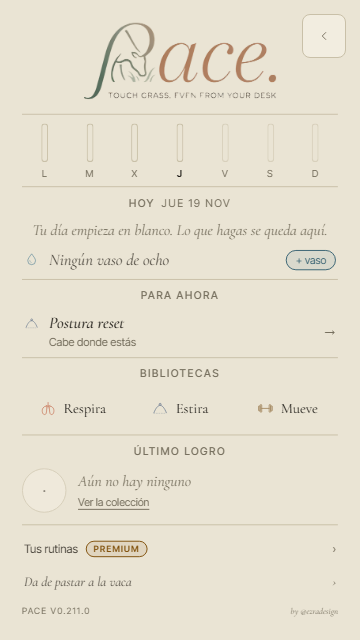
Antes · 360, guardado abierto
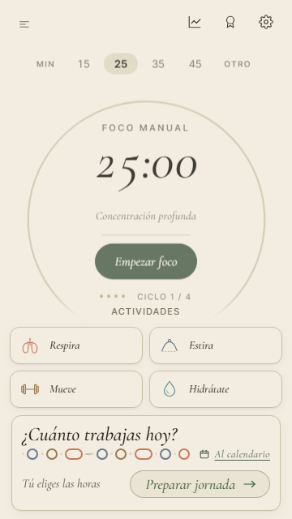
Después · 360, guardado abierto
tests/caza-19nov-cajon.spec.js · cae sin el arreglo: 2 pruebas en el móvil (abrir con él guardado abierto, y abrirlo y recargar). La del ordenador pasa antes y después.
Las pruebas que sembraban el panel abierto en el móvil (sidebar-movil, sidebar-redesign) ahora lo abren con «Abrir panel», como lo abre la gente.
2El panel se cierra con Escape y el tabulador no se escapa Montado
Elegiste sí. En el móvil y en la tableta vertical el panel es una ventana como las demás: Escape lo cierra, el tabulador da la vuelta dentro y al cerrarlo vuelves a «Abrir panel».
 Antes · 360, tras Escape
Antes · 360, tras Escape
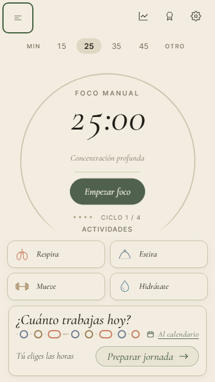
Después · 360, tras Escape
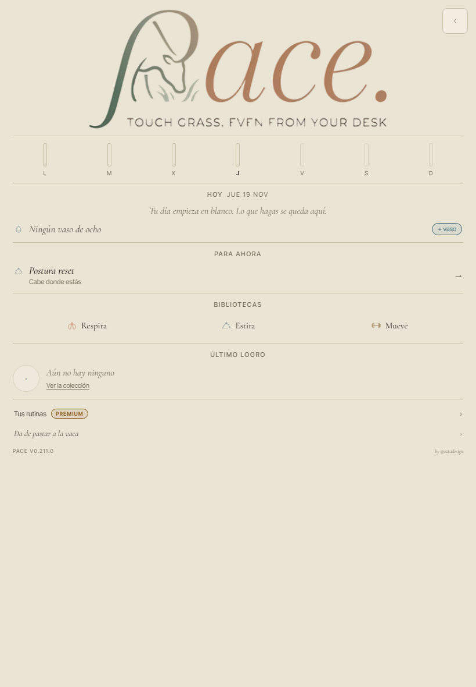
Antes · tableta 820, tras Escape
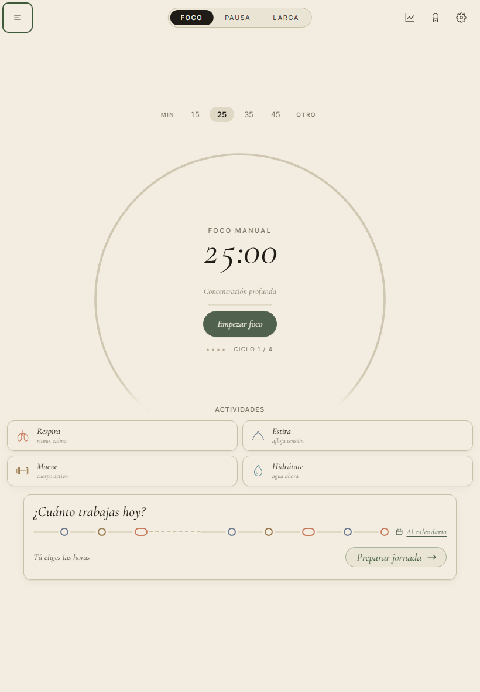
Después · tableta 820, tras Escape
tests/caza-19nov-cajon.spec.js · cae sin el arreglo: 4 pruebas (a 360 y a 820 × 1180: ventana, 30 tabulaciones dentro, Escape y el foco de vuelta; y cerrar con su flecha).
En el ordenador la barra no cambia: convive con la home y no es una ventana.
3El aviso del sello sale en el idioma de ahora Montado
Elegiste sí. Cambias de idioma sin recargar y el aviso sale entero en el nuevo; el del código, también.
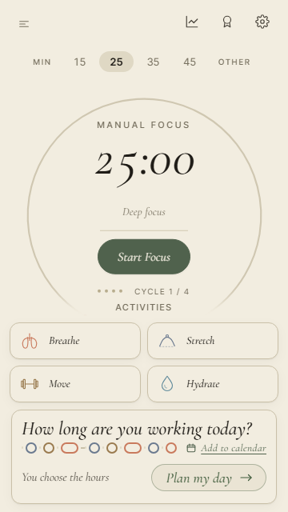
Antes · 360, «New stamp · Primer paso»
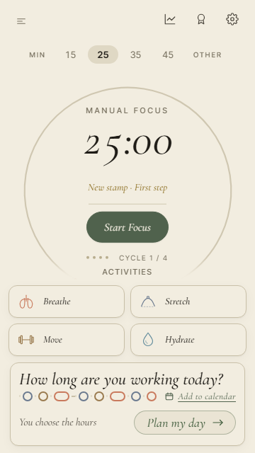
Después · 360, «New stamp · First step»
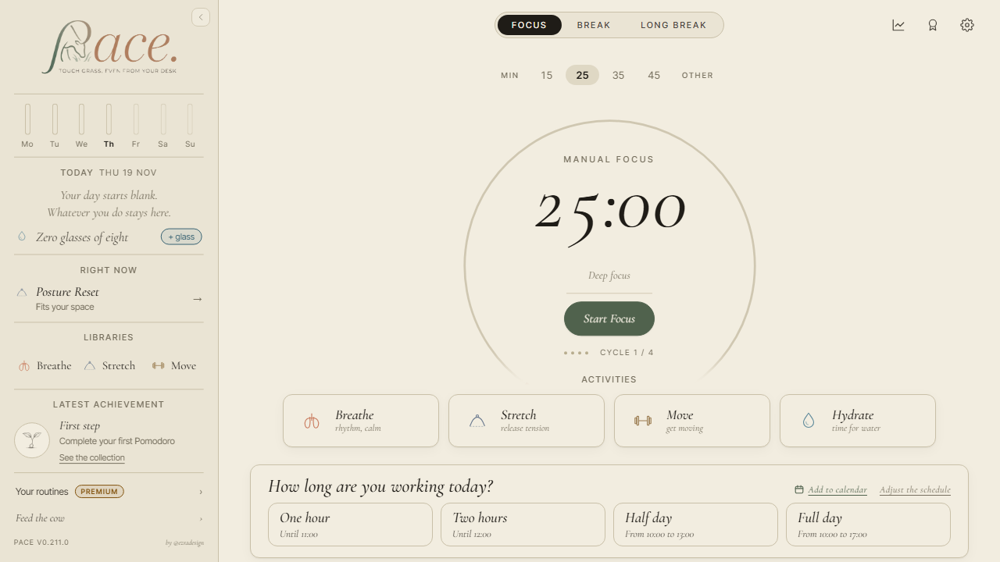
Antes · 1280
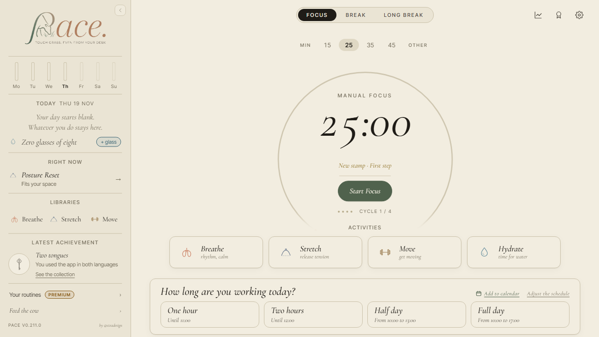
Después · 1280
tests/caza-19nov-textos.spec.js · cae sin el arreglo: 3 pruebas (a inglés, de vuelta a español y el aviso del código).
La rama del recorrido junta los sellos que llegan a la vez en un aviso y toca el mismo archivo. Aquí solo cambia el envoltorio, no lo de dentro, para que casen al juntar.
4Ajustes cabe sin scroll con los avisos bloqueados Montado · 4A
Elegiste A. La nota de debajo se va; lo dice la línea pequeña de la fila: «Foco · bloqueados en este navegador» («Focus · blocked in this browser»).
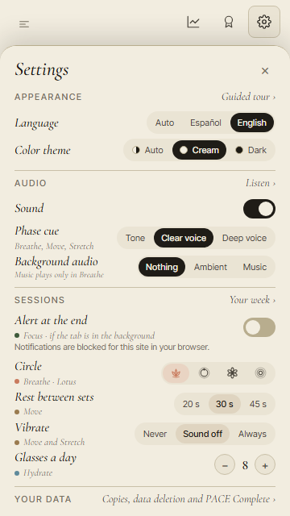
Antes · 360, en inglés
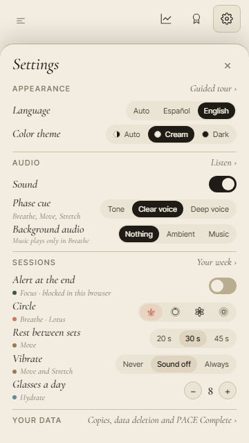
Después · 360, en inglés
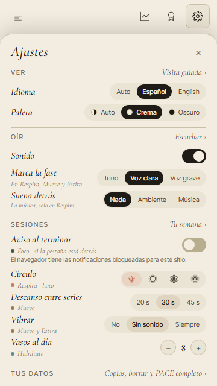
Antes · 360, en español
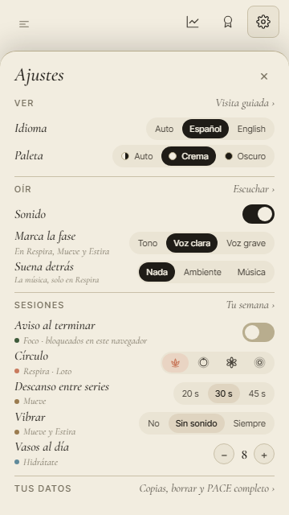
Después · 360, en español
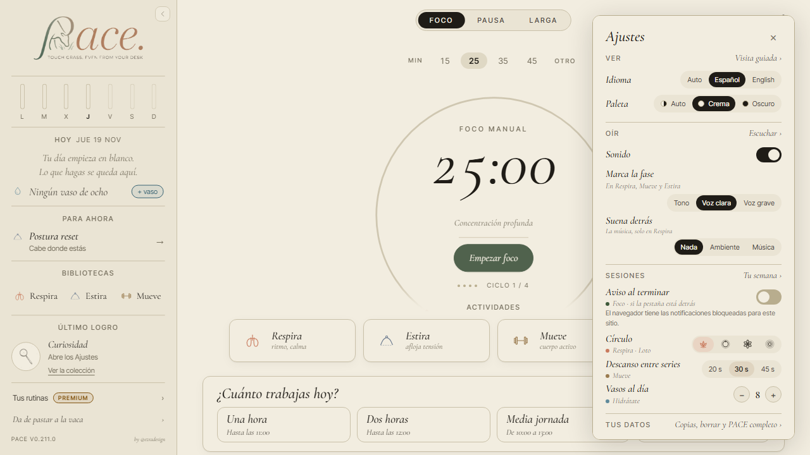
Antes · 1280 × 720
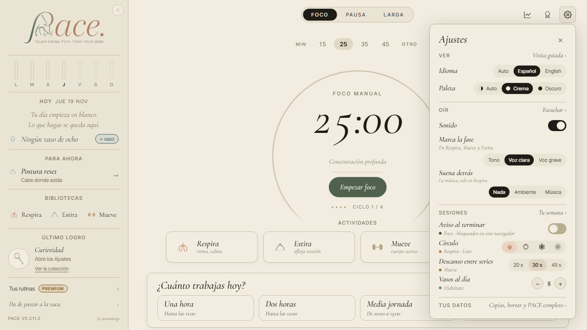
Después · 1280 × 720
tests/caza-19nov-ajustes.spec.js · cae sin el arreglo: las 8 (360 × 640, 360 × 730, 1280 × 720 y 1280 × 800, en los dos idiomas); a 1280 × 720, por los 6 px de scroll.
En las apps de Android y del iPhone la nota sigue como estaba: dice dónde se activan los avisos y sus pruebas la miden. No he medido si allí pide scroll.
5En inglés, Privacidad y Seguridad abren en inglés Montado · 5A
Elegiste A. Arriba de cada página hay un «English ↓», y la app en inglés abre directamente la parte en inglés (/privacy#en, /safety#en).
 Antes · 360, desde PACE en inglés
Antes · 360, desde PACE en inglés
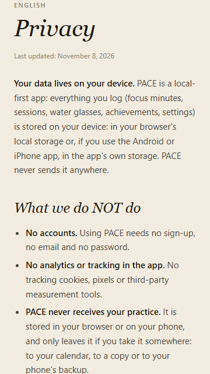
Después · 360, desde PACE en inglés
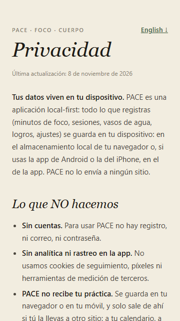
Después · 360, entrando en español: «English ↓» arriba
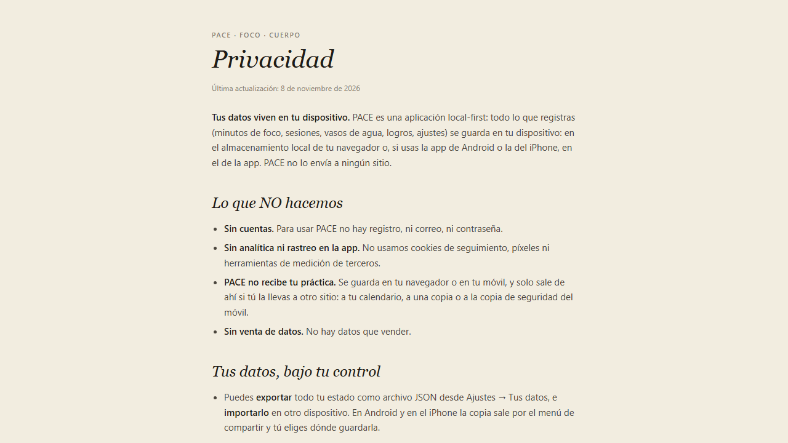
Antes · 1280
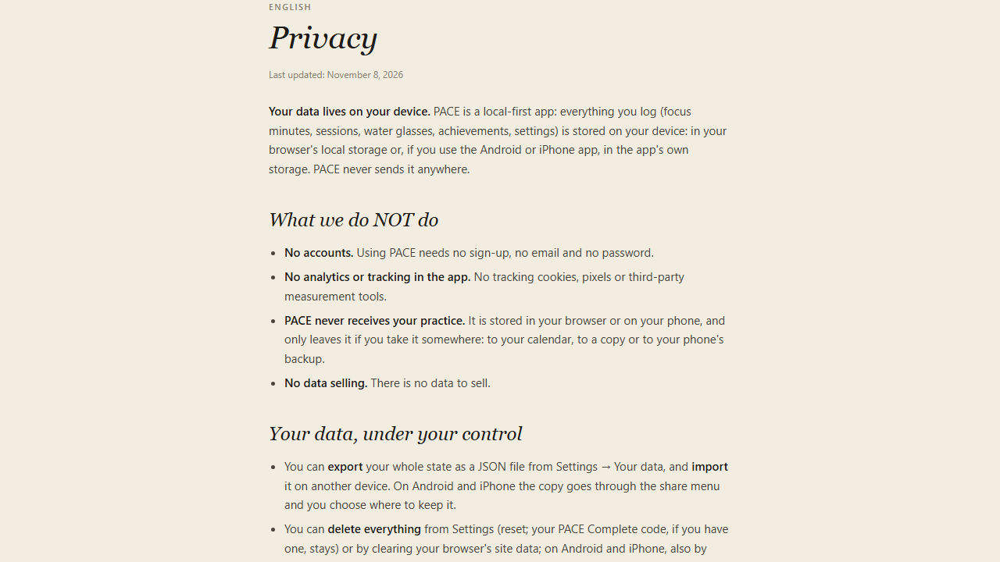
Después · 1280
tests/caza-19nov-ajustes.spec.js · cae sin el arreglo: 3 pruebas (el enlace en inglés, y /privacy y /safety con su «English ↓» y su #en).
Lo enlazan en inglés Ajustes, el acuse de una sesión («Seguridad») y el pie de la compra en las apps. Las páginas de la web (inicio, /premium, /beta) siguen enlazando sin #en; quien llega desde ahí tiene el «English ↓».
Detalles
Funcionaban, pero se leían mal.
6De noche, la loseta que ya no cabe se apaga Montado · 6B
Elegiste B. La que la medianoche cortaría se apaga y dice «Ya no cabe hoy» («No longer fits today»), como ya se apaga «Jornada entera · Tu jornada ya terminó». En el móvil y en el ordenador.
 Antes · 360, a las 23:30
Antes · 360, a las 23:30
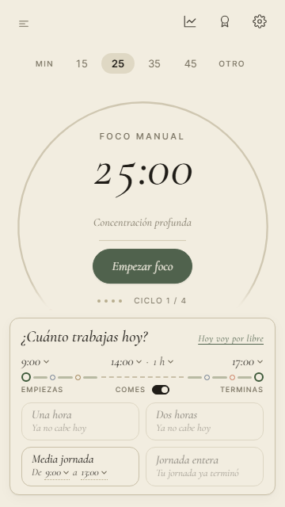
Después · 360, a las 23:30: las dos apagadas
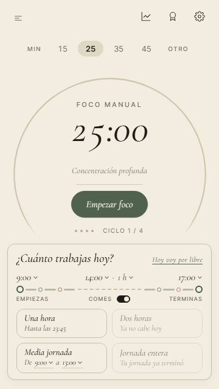
Después · 360, a las 22:45: «Una hora» sigue
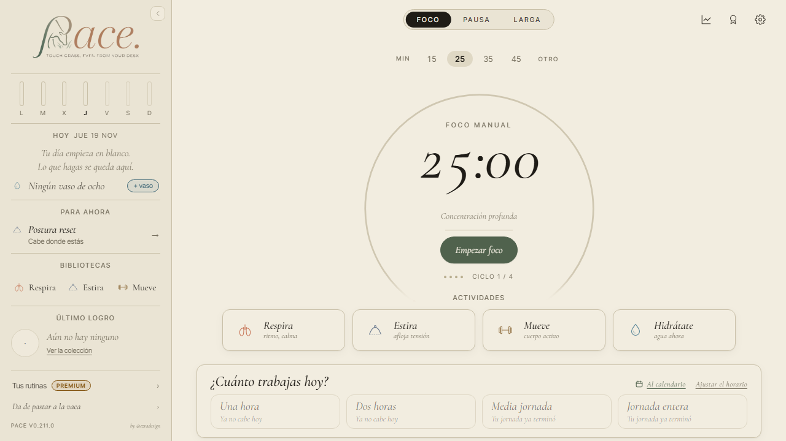
Después · 1280, a las 23:30
Después · 1280, a las 22:45
tests/caza-19nov-noche.spec.js · a 360 y en inglés cae sin el arreglo (3 pruebas); por la tarde pasa antes y después.
Las de 1280 cayeron primero porque no encontraban las losetas: en el ordenador son otras, las de la tarjeta de la home, y tenían el mismo fallo. Las arreglé las dos con la misma regla y ajusté la prueba; esas tres no las he visto caer por el fallo.
A las 23:30 ya no queda nada que elegir en «A tu ritmo»: se puede seguir por libre. Es lo que dice la B.
7Los logros dicen «Foco» Hecho en otra rama
Elegiste sí. Ya está hecho en la rama del recorrido (claude/arreglos-tester-18nov, commit a47d3bd5, con su prueba tests/textos-verdad.spec.js): «Completa tu primer Foco», «12 Focos», «8 Focos en un día», en los dos idiomas. Aquí no lo repito; llega al juntar esa rama.
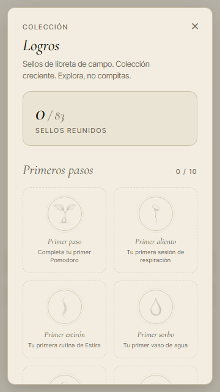
Antes · la 0.211.0
8«Después del Foco» con cero ya no suena a error Montado · 8A
Elegiste A. Con cero dice «Aún no has parado justo después de un Foco.» («You haven’t taken a break right after a Focus block yet.»). Con alguna, la frase de siempre.
 Antes · 360
Antes · 360
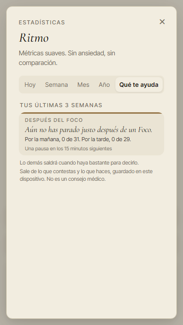
Después · 360
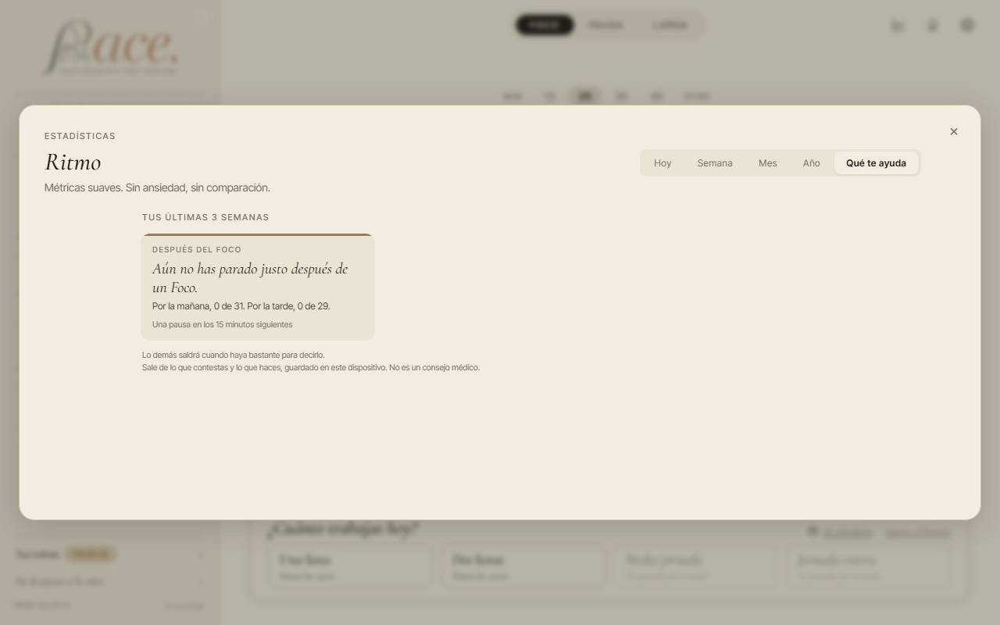
Después · 1280
tests/caza-19nov-textos.spec.js · cae sin el arreglo: 2 pruebas (en español y en inglés). La de «con alguna pausa» pasa antes y después.
9«Otro» se queda en el límite por los dos lados Montado · 9A
Elegiste A. 999 se queda en 180, como 3 ya subía a 5.
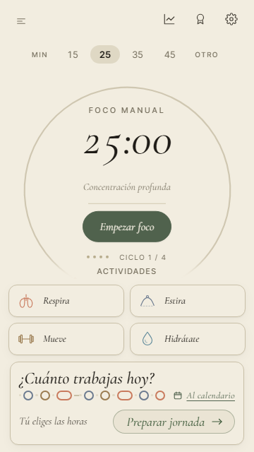
Antes · 360, tras 999: 25:00
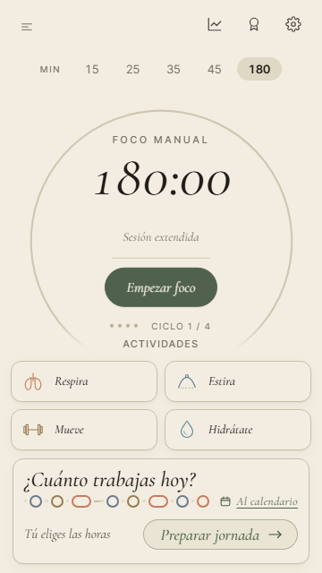
Después · 360, tras 999: 180:00
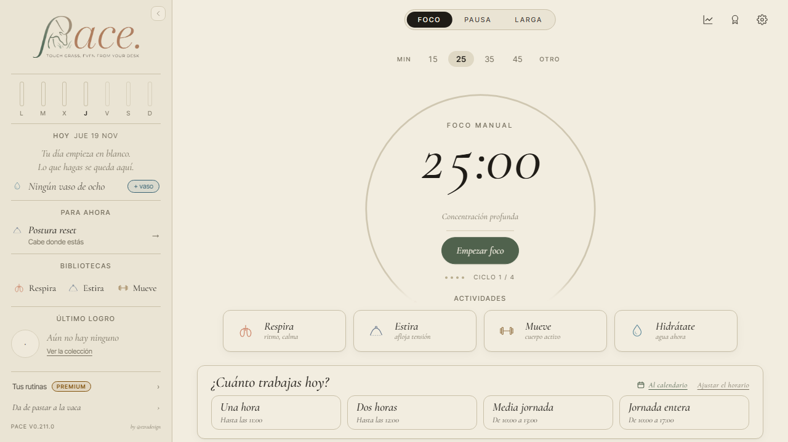
Antes · 1280
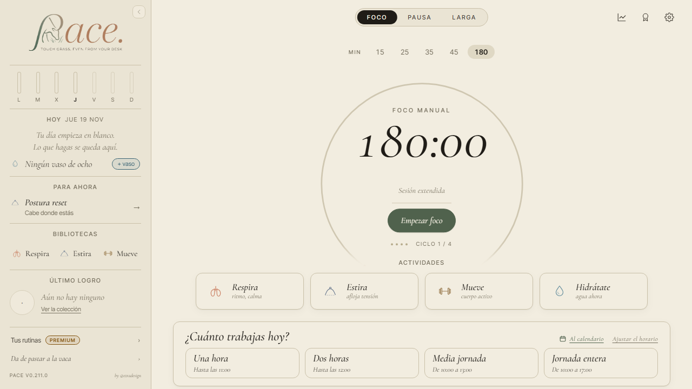
Después · 1280
tests/caza-19nov-textos.spec.js · cae sin el arreglo: 2 pruebas (999 y 181). 3 → 5 y 90 → 90 pasan antes y después.
10«2 series · 25·12 reps» Se queda como está
Dijiste que se queda como está. No se ha tocado.
 Como está
Como está
11La línea del Mes: horas y minutos, y el número de vasos como las demás cifras Montado · 11A
Elegiste A. «Foco 20 h 36 min · Respira 27 min · Cuerpo 1 h 6 min · 78 vasos». Sale en el ordenador, en el Mes y en el Año; en el móvil van las cuatro tarjetas de arriba.
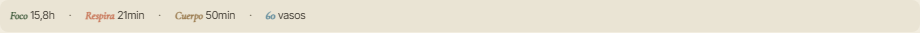
Antes · la línea, 1280
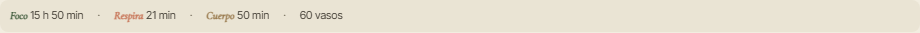
Después · la línea, 1280
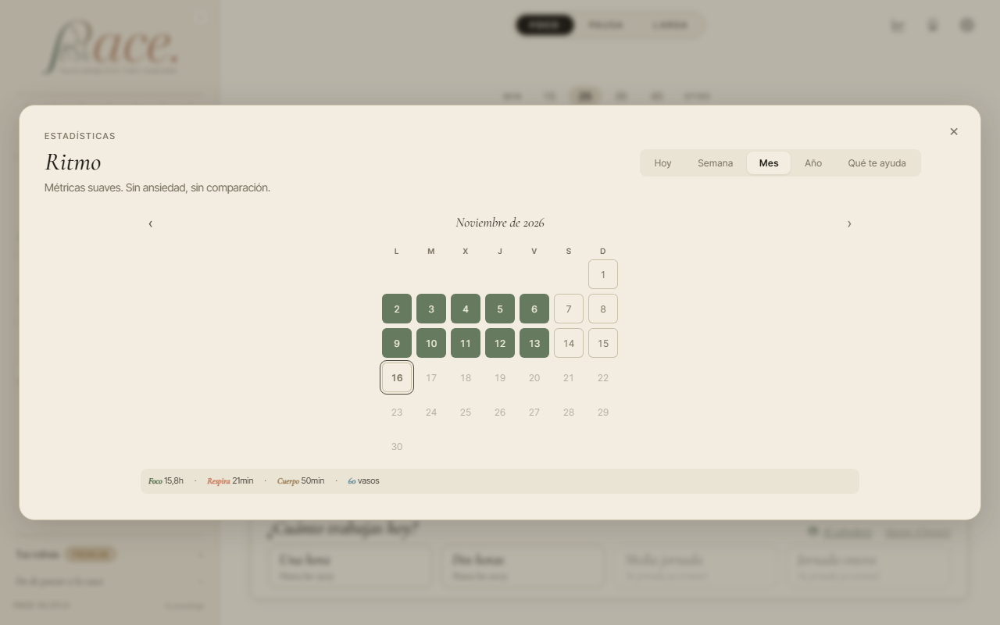
Antes · el Mes, 1280
Después · el Mes, 1280
tests/caza-19nov-textos.spec.js · cae sin el arreglo (1 prueba: el texto y la letra del número de vasos).
tests/stats-auditoria.spec.js decía «Foco 1,4h» y «las horas llevan coma»: con la 11A dicen «1 h 24 min» y sin decimales.
Lo que no he probado
- La suite entera: solo las pruebas que he tocado o escrito y las vecinas de cada cambio, más
npm run verify.
- En un móvil de verdad: las fotos son de Chromium a 360 × 640 y 1280 × 720.